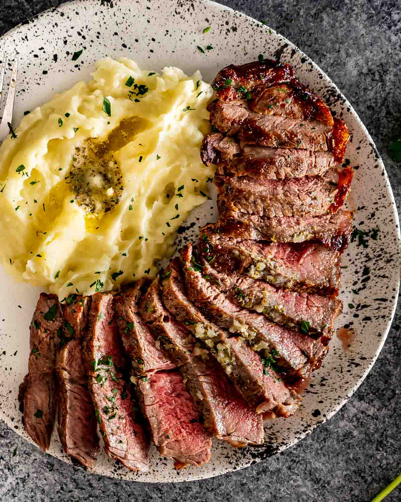
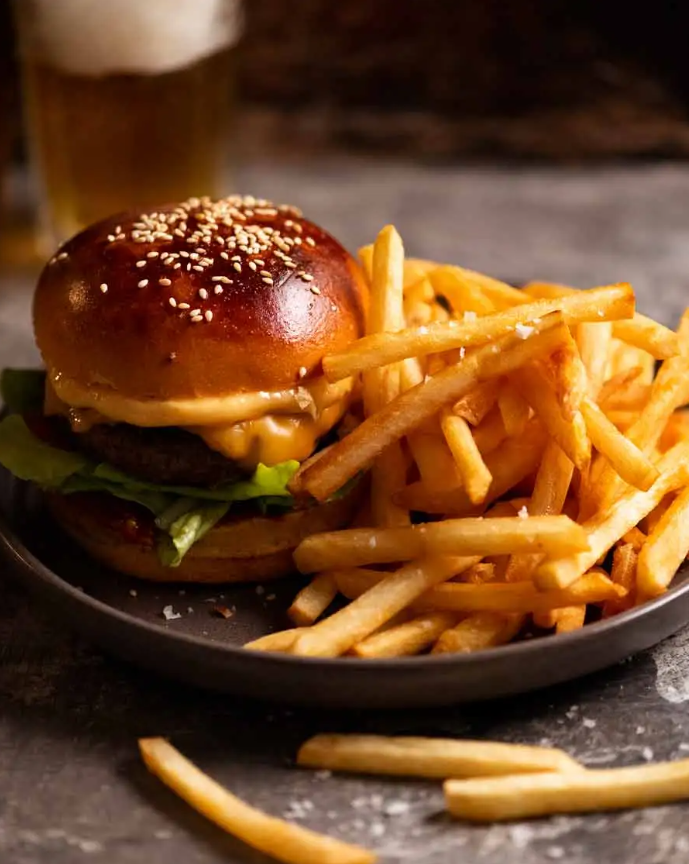
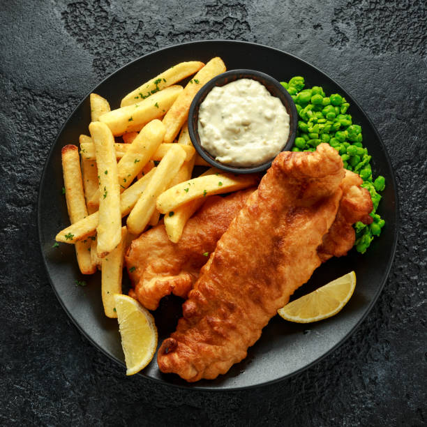

Bring Your Own Pack
No, not your own beer. We've got that covered! Bring your friends to our den and we'll show you a howlin' good time!
Open since the late 1970's, we have everything from Red Wolf Beer to Howl Liquer. It's a staple bar for a sprawling city like Jackson and the only location of it's kind in Mississippi.
Want to see if you'll win a discount?
Click on the button to see if you land a discount!
Rustle Up Some Grub
Hunter's Kill
Savory 12 ounce steak cooked to order, smothered in garlic and onion in house specialty sauce. Something that is a poster child for a staple hunters meal that any hunter would love.
Burger Delight
A burger with 80%/20% ratio of lean meat to fat ground beef with a slice of gouda cheese, bacon, pickles and many other addons you can choose from. Comes with a side of fries and your choice of dipping sauce.
Bear Spoils
Cod fish breaded to a golden brown with a side of your choosing. Just like a bear who finally caught a Salmon swimming upstream, you'll know how it feels to have the spoils of a well made meal.
Bikers Welcome!
Our bar is on route 66, a popular road trip crossing several states in the US including Mississippi. Whether you're passing through or live in or around Jackson, you're welcome in our bar*.
Vampires are NOT welcome.
Go find True Blood bottles somewhere else.
Meet the Owner
Hollis
Hollis is the bar's owner and bouncer and welcomes people from all walks of life*. He was born and raised in Jackson, Mississippi so he's your go to source for tourist information and beer recommendations alike.